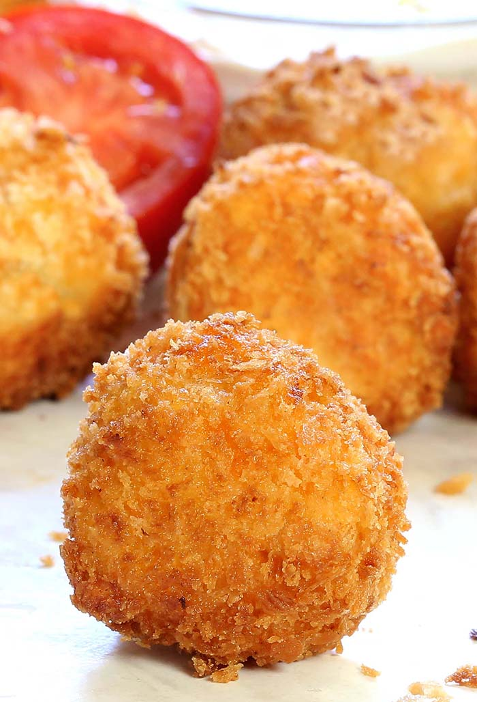

fried chicken mozzarella balls

Description
Sometimes those gif recipes know what they are talking about, thank you Tasty for this gem. My only issue with this recipe is finding ground chicken.
Ingredients
Mixture
- 1 lb ground chicken
- 1/4 cup finely chopped white onion
- 1/2 cup parmesan
- 1/2 cup panko bread crumbs
- 1/2 cup chopped parsley
- 1 tsp black pepper
- 1 tsp salt
- 1/2 tbsp fennel seed
- 1 clove garlic minced
- 1/2 tbsp lemon zest
- 1 egg
Other Ingredients
- mozzarella
- flour
- eggs for wash
- panko
- vegetable oil
Steps
- Combine mixture ingredients in a large bowl
- make balls 4-5cm diameter
- add 2cm cube of mozzarella to the center of each ball, and reform into ball
- roll in flour, then in whished egg bath, then pankco
- fring in 1cm of vegetable oil, rotating untill all sides are golden
- bake for 15 minutes at 400F/200C
- serve with marinara sauce